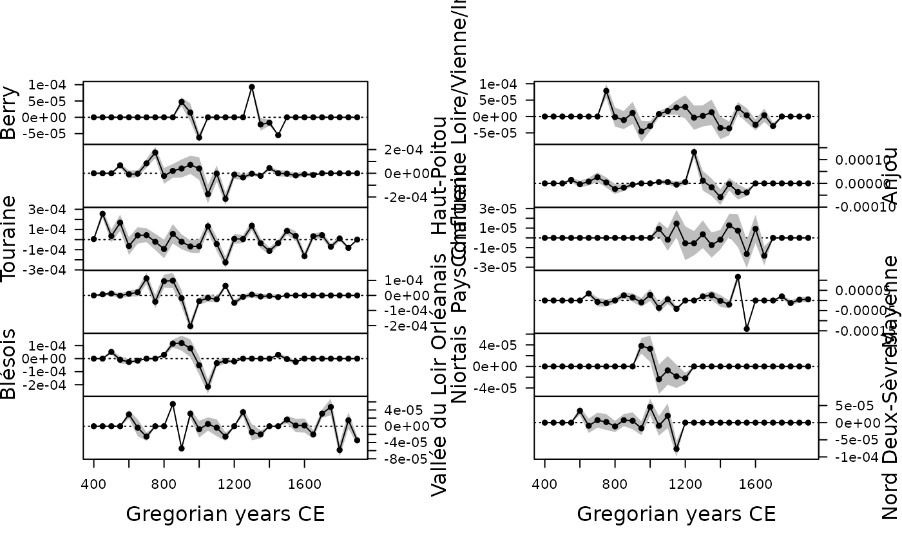

Computes the aoristic sum.
Arguments
- x, y
A
numericvector giving the lower and upper boundaries of the time intervals, respectively. Ifyis missing, an attempt is made to interpretxin a suitable way (seegrDevices::xy.coords()).- ...
Currently not used.
- step
A length-one
integervector giving the step size, i.e. the width of each time step in the time series (defaults to \(1\), i.e. annual level).- start
A length-one
numericvector giving the beginning of the time window.- end
A length-one
numericvector giving the end of the time window.- calendar
A
TimeScaleobject specifying the calendar ofxandy(seecalendar()). Defaults to Gregorian Common Era.- weight
A
logicalscalar: should the aoristic sum be weighted by the length of periods (default). IfFALSEthe aoristic sum is the number of elements within a time block.- groups
A
factorvector in the sense thatas.factor(groups)defines the grouping. Ifxis alist(or adata.frame),groupscan be a length-one vector giving the index of the grouping component (column) ofx.
Value
An AoristicSum object.
Details
Aoristic analysis is used to determine the probability of contemporaneity of archaeological sites or assemblages. The aoristic analysis distributes the probability of an event uniformly over each temporal fraction of the period considered. The aoristic sum is then the distribution of the total number of events to be assumed within this period.
Muller and Hinz (2018) pointed out that the overlapping of temporal intervals related to period categorization and dating accuracy is likely to bias the analysis. They proposed a weighting method to overcome this problem. This method is not implemented here (for the moment), see the aoristAAR package.
References
Crema, E. R. (2012). Modelling Temporal Uncertainty in Archaeological Analysis. Journal of Archaeological Method and Theory, 19(3): 440-61. doi:10.1007/s10816-011-9122-3 .
Johnson, I. (2004). Aoristic Analysis: Seeds of a New Approach to Mapping Archaeological Distributions through Time. In Ausserer, K. F., Börner, W., Goriany, M. & Karlhuber-Vöckl, L. (ed.), Enter the Past - The E-Way into the Four Dimensions of Cultural Heritage, Oxford: Archaeopress, p. 448-52. BAR International Series 1227. doi:10.15496/publikation-2085
Müller-Scheeßel, N. & Hinz, M. (2018). Aoristic Research in R: Correcting Temporal Categorizations in Archaeology. Presented at the Human History and Digital Future (CAA 2018), Tubingen, March 21. https://www.youtube.com/watch?v=bUBukex30QI.
Palmisano, A., Bevan, A. & Shennan, S. (2017). Comparing Archaeological Proxies for Long-Term Population Patterns: An Example from Central Italy. Journal of Archaeological Science, 87: 59-72. doi:10.1016/j.jas.2017.10.001 .
Ratcliffe, J. H. (2000). Aoristic Analysis: The Spatial Interpretation of Unspecific Temporal Events. International Journal of Geographical Information Science, 14(7): 669-79. doi:10.1080/136588100424963 .
Ratcliffe, J. H. (2002). Aoristic Signatures and the Spatio-Temporal Analysis of High Volume Crime Patterns. Journal of Quantitative Criminology, 18(1): 23-43. doi:10.1023/A:1013240828824 .
Examples
## Data from Husi 2022
data("loire", package = "folio")
## Get time range
loire_range <- loire[, c("lower", "upper")]
## Calculate aoristic sum (normal)
aorist_raw <- aoristic(loire_range, step = 50, weight = FALSE)
plot(aorist_raw, col = "grey")
 ## Calculate aoristic sum (weights)
aorist_weighted <- aoristic(loire_range, step = 50, weight = TRUE)
plot(aorist_weighted, col = "grey")
## Calculate aoristic sum (weights)
aorist_weighted <- aoristic(loire_range, step = 50, weight = TRUE)
plot(aorist_weighted, col = "grey")
 ## Calculate aoristic sum (weights) by group
aorist_groups <- aoristic(loire_range, step = 50, weight = TRUE,
groups = loire$area)
plot(aorist_groups, flip = TRUE, col = "grey")
## Calculate aoristic sum (weights) by group
aorist_groups <- aoristic(loire_range, step = 50, weight = TRUE,
groups = loire$area)
plot(aorist_groups, flip = TRUE, col = "grey")
 image(aorist_groups)
image(aorist_groups)
 ## Rate of change
roc_weighted <- roc(aorist_weighted, n = 30)
plot(roc_weighted)
## Rate of change
roc_weighted <- roc(aorist_weighted, n = 30)
plot(roc_weighted)
 ## Rate of change by group
roc_groups <- roc(aorist_groups, n = 30)
plot(roc_groups, flip = TRUE)
## Rate of change by group
roc_groups <- roc(aorist_groups, n = 30)
plot(roc_groups, flip = TRUE)
